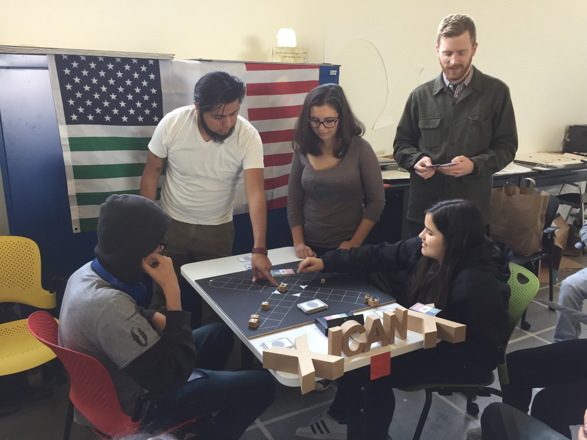

CCPA had a competitive Robotics team from 2017 to 2020.
Derrick McMillen was the coach, and Arnetta Olden (later a CCPA Computer Science teacher) was one of the student competitors.
In these years, CCPA participated in competitions through a UC Berkeley program.
Here are some photos of past CCPA Robotics teams:
